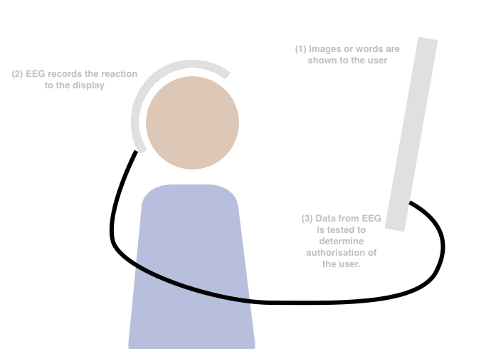

>INFORMATION SECURITY
>Team R
About Information Security
We use information security every single day. We use it when we go to the shop and hide the card’s PIN with our hands, when we protect our passwords, or when we keep our home key hidden. It’s just that we don’t think about it too much, or at least as much as we should.
So, basically, information security means preventing any type of unauthorized access of our information.
Here at UCL, research is very important. That is why we decided to ask the best people in the field about our research.
As Meiser Sebastian, one of the UCL’s academic staff, gave us a definition on his own, "Information security is about analyzing how the real world or real protocols are different from a computer trusted environment".
We asked him why information security is important. Here is his answer(slightly paraphrased)):
“We live in a globally connected society that involves internet and applications which enables us to communicate all over the globe. The technology gives us a lot of opportunities but it also comes with risks.
In a small environment, traditional security measures like physically going to a bank where they know you, your identity, your signature – they can conduct verifications. But to expand this globally, information security IS needed.
When you send something via the internet, anyone can potentially see it. For instance, internet banking will be too far-fetched without having security in the first place. This means that information security is important in achieving all these tasks in a safe way.
In conclusion, in order to expand a physical and easily controllable action to a global environment/longer distances within a shorter time, security mechanisms are required.”
You go, UCL!
History of Information Security
Information Security has been an issue for a very long time. It might even exist since the invention of communication itself. For instance, the Romans created the Caesar cipher in 50 BC; in order to have a safe medium of communication for their diplomats and military.
But, the computers brought Information Security to a next level of complexity and importance.
In the 1960s, the early ages of computers, almost anyone with the most basic knowledge of computers could break into a device; until the first passwords and other digital protections were created.
In the 1970s, governments and other big organisations started using networks with critical data through telephone lines. When people realized the vulnerability of these infrastructures, they began working on the research of exploitable breaches. So, the first people who stole data, via the infiltration of telephone lines, were the first groups of hackers in the History of Computing. That is the first milestone of Information Security as it raised a new kind of threat for privacy.
In the 1980s: this strange decade witnessed a dramatic increase of cyber-attacks on banks’ and other companies’ servers while Information Security was only at its premises! Consequently, numerous robberies from a distance took place but neither the counter attacks nor the defensive measures existed at the time. Governments decided to establish new jurisdictions to penalize online offenses and started pursuing hackers. For instance, the 414s, a group of teenagers from Milwaukee who broke into various computer systems doing little damage but having the potential to do much worse, warned the US government and the FBI about the security issues of the national institutions. Indeed, their spokesman, Neal Patrick testified before the US House of representatives in 1983 about theses risks and arguably led to the six bill that were passed that year. That period marks an important progress in Information Security, elevating it to a national matter.
In the 1990s, as the Internet was just released the year before, the masses started putting their personal information online. Thus, all of these people became new preys for hackers who could benefit from their personal data. Important private data was stolen during these years, but once again, that extensively influenced the growth of Information Security. Firewalls as well as Antivirus began to be commercialized at a larger, global scale.
In the 2000s, as cybercrime became a true crime, the dissuasive aspect of hacking started to arise. However, Information Security still had to evolve as new hacking methods were created and new breaches in the online computer systems were found almost every day due to a gigantic community of hackers throughout the world. Next generations of Firewalls were developed and privacy became an everyday life concern for millions, if not billions of people.
In the 2010s, the smartphones started to be used by billions of people, and raised new concerns for privacy and data security. For example, contactless payment platforms on smartphones could be hijacked by bold-enough hackers. This leads to a peer-to-peer theft on a daily basis, unless new and complex encryption methods like fingerprint authentications were created. These improvements in Information Security allow safe transactions and brand new technologies to develop.
The future of technology can be bright, providing that Information Security remains a priority for big companies and governments.
NOWADAYS - INTERNET SECURITY
Internet security means securing the resources on the internet against attacks over the internet. It is very essential as it might involve the further development of future applications of the network.
For companies
Generally speaking, there is a contradictory relationship between the security of systems and the function of systems all the time. If a system never opens to the external environment, there would be no threat to the security from outside; which make the system absolutely safe. However, when a company connected with international network offer shopping online, it makes a close and internal network become an external one. Then, plenty of security troubles come as well. Even more, it also costs a higher management fee and it decreases the efficiency of network.
However, doing online business is unavoidable in today’s society. Therefore, maintaining the security of internet becomes the key thing.
To establish a full-range of secure systems, it should include the things as follows.
access controlling
security bug checkingc
anti-attack spying
communication encrypting
️authentication
back-up and recovery
These can all help users to avoid network accidents and increase the usable value of network. The more important applications and data online, the more necessary it is to keep them safe.
For individuals
Malware is the biggest problem for the individuals. This is a kind of malicious software that crushes down the program process by implementing computer viruses, worms or trojan horses in order to take control of it.
There are three types of malware —— trojan horses, worms and viruses.
Trojan horse: theis kind of programs looks harmless, but it actually contains some hidden code aimed at damaging the system. Emailing users with this trojan horse program without instructions is a common way to exploit.
️
Worm: This can be expanded by itself, as it can automatically expand from one computer to another computer in the internet environment. It can execute some harmful operations like consuming the internet or local resources.
The virus has a clear intention, which is to attach itself into the host environment to make it convenient for the transaction between computers. Viruses can damage both hardware and software, as well as destroy data. The virus code would be implemented immediately after the host environment is executed and could affect other new host environments.
Malware also has some specific characteristics: it’s hard to install/uninstall, it modifies the preferences without the users’ permission, it popps up advertisement, collecting users’ information with bad intentions and many more. Dealing with malware is usually a hot topic for the software engineers.
For governments
If malware is closer to individuals, organisations like “Anonymous” might be a big problem for governments.
Anonymous, a famous hacker association, appeals to increase the internet freedom in the world. Based on this intention, people in this organisation have done a lot of amazing work as mentioned below.
Invade the website of lots of governments and big international companies like CIA, Chinese government, Korean government, Philipines’offical website, Taiwan’s education website, Japanese prime minister’s official website, Thai police’s website, Facebook, Sony, etc.
Give warning of ISIS and USA government on the world-wide website.
Successfully stop ISIS’s plans of attacking Italy.
Anonymous has also exposed a phone record between British police and FBI, which content included taking action against Anonymous. It is very embarassing that something like that happened, so they always be the first target of governments. Although they might do all the actions based on good intentions, it does make us realise that our resources and private informations are not safe.
Simple solution
To do as much as you can to protect your privacy, the first step is to install a firewall.
Firewall is a layer between internal network and external network. This is a defensive system which, according to the specific rules, give access and limits the transaction of data.
The benefits:
Strengthening the network security strategy: it doesn't need to send all the security software to every device you use.
Monitoring network access: if all the data has to go through a firewall, it can thenrecord all these and analyse the data. Therefore, if some suspicious actions occur, the firewall can give a warning and offer details.
Preventing the leakage of the internal information: As it can separate the internal and external network, the consolation of internal key partial network can be achieved. A tiny and unnoticed bug can make a huge attack from outside come true. The firewall can hide these leaking internal details.
Once you connect your computer with a network, you are actually putting your computer into a highly dangerous environment. But it is an unavoidable step. So what we need to do is to find the balance between security and the function of the network. A system’s security can never be a perfect one, but we can try to make it as perfect as we can. This is our ultimate goal!
The Future of information security
The Future of information security is very hard to accurately predict, largely because most forms of information security is relative.
This means that we can only DEFEND against something that we know about.
That said, we can predict some things. In the modern era, there are two ways to access secured data.
Physical protection
The first is fairly straight forward, you gain access to where the data is physically stored and access it directly.
To defend against this, we do many things. The first line of defence comes in the form of law, this deters potential thieves due to fear of the consequences. The next comes in physical defence where measures are put in place to prevent a thief from accessing the data. The third stage is ENCRYPTION.
Encryption is a method of hiding the meaning of the data, rendering it largely useless. This process uses a variety of protocols. These protocols are then reversed when an authorised user is detected, normally, the data from this authentication is somehow involved in the encryptions, but that is another matter. This does however bring us to the problem of AUTHENTICATION. Just a couple of lines ago I mentioned that the data is un-encrypted when an authorised user is detected, however there are ways of tricking this process.
As such much of the research in this field revolves around more secure methods of authentication.
This requires the ability for people to input intensely complex keywords, and so far, the most promising route seems to be BIOMETRICS.
Biometrics is the process of collecting information from the body. In this field, it is using that information in the place off a password in normal encryption systems. Doing this allows users to input a much more complex key with much less effort.
However this does have some disadvantages, specifically, including all the fingers, the plans and the eyes, there are a total of fourteen easily accessible biometric sites on the human body. To alleviate this, researchers have been developing something arguably more secure.
Specifically, they have devised a way of using EEG readings of a brain that is shown specific words or images as a new biometric input. What is extremely helpful is that these images can be changed. However the main problem in this case is the implementation. Until there is a more efficient means of gathering the requisite data, it will be nigh impossible to properly implement this technique.

Network Protection
The other way of accessing secured data is accessing it remotely.
This mainly revolves around stopping intrusions into a network from a remote source. This involves a level of encryption, however this can be bypassed if someone intercepts the encryption key.
To this end scientists have found a way of sending a cypher without the possibility of interception. They have created a system that sends one of a pair of entangled photons to the target. This allows the sender to retroactively encode data onto the photon once it has reached the recipient rather than when the sender sends the message. Thus, if the photon is intercepted, the cypher is not sent and there is no way for the encryption to be broken.
Even here, at UCL, researchers battle with the future. We have interviewed Meiser Sebastian, one of the academic staff, and here is his answer:
Can you highlight some research examples and where the research area is leading to in the future?
We had a mathematical model for quantifying anonymity which inputs a TOR network status - a file that’s uploaded every hour. TOR client uses that to know which other servers exist. So we get the file, calculate and get a number. This can be put into practice by developing an add-on. TOR comes with a browser like Firefox but more secure that automatically uses TOR.
A student of Mr Sebastian made a TOR browser plugin that runs in the background to calculate our guarantees and shows whether it’s good/bad/mixed and compares it with how anonymity guarantees have been in the past. If something weird happens then, as a client, you normally wouldn’t be able to see it in a browser. However, the add-on would show it if the guarantees calculated are much worse than expected.
The benefit is that the user can have a product which takes all the foundational stuff and provides some advantage. It is helpful in raising awareness of the user to see whether some unexpected stuff is going on and to not do stuff on internet which are too privacy-critical.
ABOUT
Guide to Information Security
How one goes about
protecting their data is a
very important task which greatly depends on how much effort one is willing to put into defending their data.
This
mainly comes from the cost that is incurred from using such protective measures. More advanced methods of information security tend to generate a delay when using the internet and after a certain point in general use as well. This comes from the various extra steps it takes for one’s computer to be able to
access,
store,
transmit or
receive this data.
However for most normal people there isn’t too much one needs to do.
The first step would be to make sure that any file you are uploading to the internet is a file that you are fine with being leaked. This simple act can
seriously limit the repercussions one receives from a breach of information security.
The next step would be to make sure you read the terms of service, or at least skim them. If you can understand at least the key words you can get a feel of how various services want you to allow
them to treat your data. For example, one of Google’s terms of service is that they can tracy your searches and use this information to target ads more accurately.
The third step would be to install an Anti-Virus software, make sure you run it every week or so to clear out your computer. While this won’t protect you from the most malicious of code, most common
viruses,
worms and
trojans can and
will be spotted.
However possibly the simplest action would be
to practice good password etiquette. Unsurprisingly, there are a lot of ways to improve password security, however there is one that is fairly simple: make it longer. That does not mean hard to remember mind you, it’s a lot easier to remember Gl0wingGr33nEyes@Night than it is to remember x3rY4j*u, and the former is a lot stronger.
The
final piece of advice I can give you is to avoid sending any sensitive data over WI-FI or other similar systems in public. Systems such as a WIFI pineapple and or the Triggerfish allow people to tap into WIFI and cellular connections respectively, so AVOID using internet banking and other, similar websites while in public.
If you are worried that you will be specifically targeted things get a lot harder.
As with a lot of things, it is much harder to defend against
concerted attempts from a hacker, or government surveillance. To this end there is a lot more you can do to protect yourself.
The first step would be to install a
VPN. A VPN will anonymise the data, preventing it being linked to you. It also encrypts data transfer between you and the VPN, which does help when someone is trying to listen in on your communications over the WI-FI network or cellular data.
The next thing you can do would be to install encrypted variants of common applications.
Reset the Net has a privacy pack which provides encrypted chat and calling for you phone, encrypted chats for you computer, and Tor, a browser that acts like a VPN to a certain extent.
There are a few more things you can do, primarily by finding alternatives to common internet based applications that you use. For example,
Tox provides a fairly secure alternative to Skype. However it requires that you send the encryption key to the other person directly rather than some of the more normal encryption protocols used today. It is not too difficult to search for a secure alternative for most programs. One
exception is Google Docs, or other collaborative document editing software. The best alternative my research could turn up is
Kolab. However it is a largely corporate focused system. The most secure alternative would be to use one of the other programs to send encrypted files and share work that way, though that has the downside of not allowing collaboration in real time.
This will tend to protect you against most things short of someone physically forcing you to give them access to your data.
However, these systems are not 100% secure. VPNs can be tapped at the VPS server location, quickly undoing all the work that it does. Such things however, tend to be solely in the realm of government surveillance. To this end, when selecting a system such as a VPN where there is remote hardware that you are connecting to, avoid picking something hosted in the following countries:
Australia
New Zealand
Bahrain
China
Germany
India
Iran
Netherlands
North Korea
Russia
Syria
United Kingdom
United States
Vietnam
These countries have been known to spy on internet communications passing through their jurisdiction. Some, like the US and India even have
legislation granting them legal right to monitor such traffic.
However, keep in mind the the average person does not need a very high level of security.
Mass Surveillance often looks for keywords and other such specific information to provide the users with what they are looking for and not a the unending rush of information that is collected. As such, the most almost anyone would need is a VPN hosted in a fairly safe country.
A final reccomandation from the UCL Information Security's staff:
No-script: A Firefox plugin. Deactivates old scripts. Manually say which domains you want to allow it for temporarily. Can also handle permanent permissions but ideally only for the sites you trust and visit all the time.
0
1
0
1
1
0